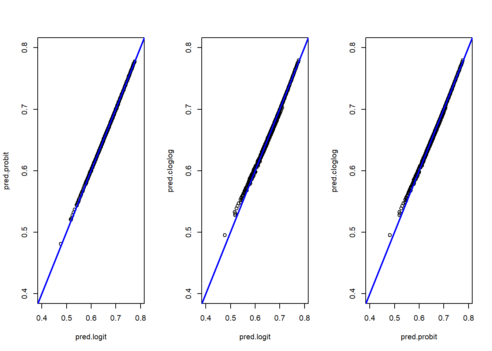
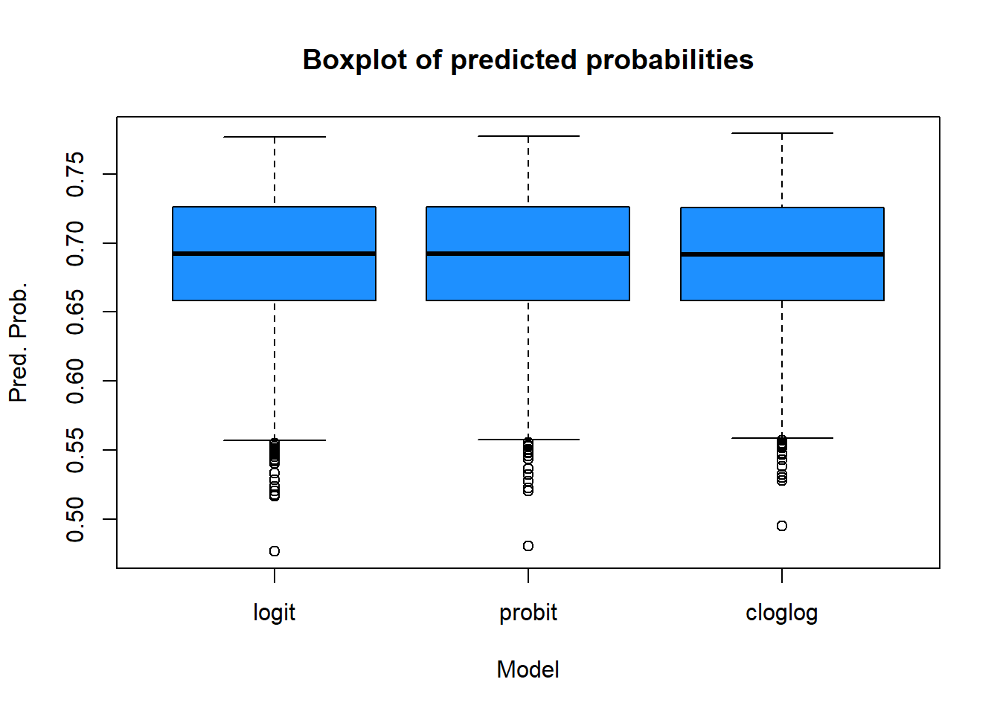
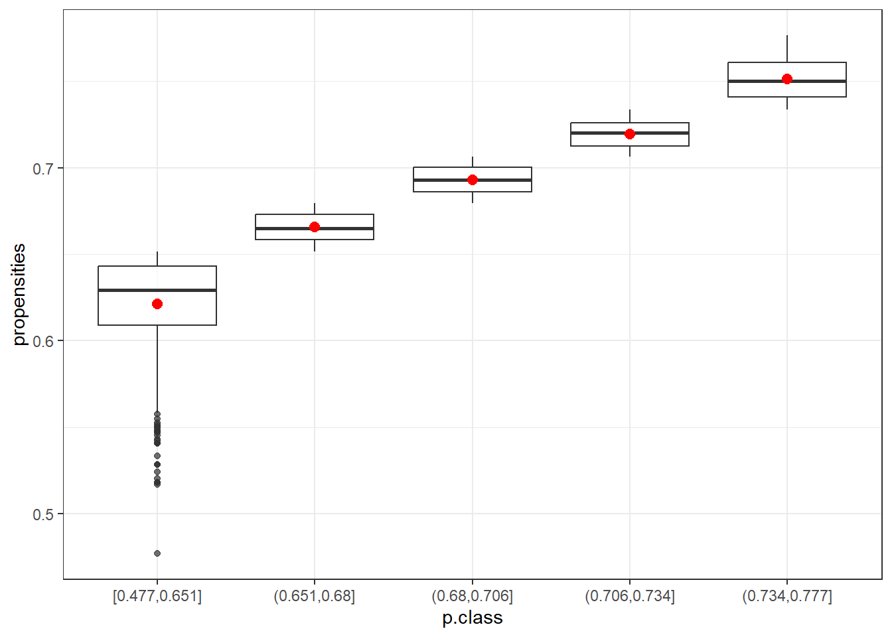
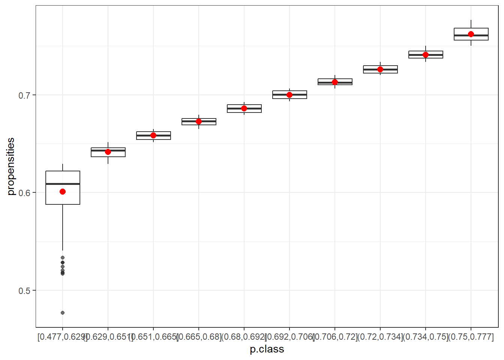

library(foreign)
gps <- read.spss("gps.sav", to.data.frame = TRUE)Survey weighting
Introduction
This material is part of the Utrecht Summer School S16 - Survey Research: Statistical Analysis and Estimation.
In this practical session we learn how to adjust for nonresponse and coverage.
The exercises are standalone: depending on your interest and the time you want to spend on every topic, you can skip exercises.
Analysing nonresponse
GPS is the acronym for General Population Survey. It is the made up name of a Dutch survey carried out by Statistics Netherlands. The survey data file has been anonymized to prevent statistical disclosure problems. The response/nonresponse patterns in the file are real.
The sample was selected by means of a stratified two-stage sample. In the first stage, municipalities were selected within regional strata with inclusion probabilities proportional to the number of inhabitants. In the second stage, an equal probability sample was drawn in each selected municipality. As a result the sample is self-weighting; all persons have the same inclusion probability. The sample size was 32,019.
Objective of the survey is to estimate population means for a number of target variables. Like every survey, however, there was nonresponse. Fortunately, it was possible to link the survey data file to the Social Statistical Database (SSD) of Statistics Netherlands. Therefore the values of a set of auxiliary variables have become available for both respondents and nonrespondents. This information can be used to analyse the nonresponse and to adjust for potential nonresponse bias.
You will find the survey data in the file gps.sav. The list of the available target variables and auxiliary variables (background variables) is given in the table below. The auxiliary variables are available for both respondents and nonrespondents. The target variables are only available for the respondents.
| Variable | Description | Type of Variable |
|---|---|---|
| Gender | Gender | Auxiliary |
| MarStat | Marital status | Auxiliary |
| HasPC | Owns a pc or laptop? | Target |
| OwnHouse | Owns a house? | Target |
| Urban | Urbanization level of area of residence | Auxiliary |
| Age13 | Age in 13 categories | Auxiliary |
| Region | Region of the country | Auxiliary |
| Phone | Listed telephone? | Auxiliary |
| HouseVal | Average value of house at zip code | Auxiliary |
| HasJob | Has a job? | Auxiliary |
| Employed | Employment status in three categories | Target |
| Married | Married? | Auxiliary |
| HHSize | Size of the household | Auxiliary |
| HHType | Type of household | Auxiliary |
| Ethnic | Ethnicity | Auxiliary |
| Respons1 | Response after one month? | Paradata |
| Result | Fieldwork result | Paradata |
| Response | Response after two months? | Paradata |
| Contact | Contact with sample unit? | Paradata |
| Able | Sample unit able to respond? | Paradata |
To load the data into R, we can use the following code:
- Compute the Response Rate
Calculate the response rate for the survey. Use the variable Result for this. The variable Result contains the percentage of people that fall in each response category: 1) “Unproc” = case is not handled by the interviewer and returned unprocessed, 2) “Response” = case responds, 3) “Non-contact” = no contact was established with case during data collection period, 4) “Refusal” = case refused participation, and 5) “Not-able” = case was not able to respond due to language or physical/mental condition.
Hint: use prop.table.
Click here to show the solution
prop.table(table(gps$Result))
Unproc Response Non-contact Refusal Not-able
0.07670446 0.58690153 0.05768450 0.24641619 0.03229333 The resulting response rate is RR1 in AAPOR definition. From the table, we can observe that the response rate is around 58.7%.
- Identify the variables that associate most with nonresponse
As the response rate is well below 100%, there is a risk of nonresponse bias. Nonresponse adjustment may be necessary. Before we can do such an adjustment, we first need to investigate the relationships between auxiliary variables and response, and between the auxiliary variables and the target variables of the survey. For this purpose, we employ so-called association measures. The correlation between two variables is the most well-known but cannot be applied to categorical variables. For categorical variables other measures exist such as Cramér’s V. These measures usually take values between 0 and 1, where 0 indicates no association and 1 means full association.
- Build contingency tables of the response indicator versus each of the auxiliary variables. Perform chi-square tests for independence of response and each of the auxiliary variables. You can use
chisq.test(response,variable).
What are the strongest candidates for nonresponse adjustment?
Click here to show the solution
# for auxiliary variable gender
table(gps$Response, gps$Gender)
gendertest <- chisq.test(gps$Response, gps$Gender)
gendertest
# for auxiliary variable marstat
table(gps$Response, gps$MarStat)
martest <- chisq.test(gps$Response, gps$MarStat)
martest
# for auxiliary variable urban
table(gps$Response, gps$Urban)
urbantest <- chisq.test(gps$Response, gps$Urban)
urbantest
# for auxiliary variable age13
table(gps$Response, gps$Age13)
age13test <- chisq.test(gps$Response, gps$Age13)
age13test
# for auxiliary variable region
table(gps$Response, gps$Region)
regiontest <- chisq.test(gps$Response, gps$Region)
regiontest
# for auxiliary variable phone
table(gps$Response, gps$Phone)
phonetest <- chisq.test(gps$Response, gps$Phone)
phonetest
# for auxiliary variable houseval
table(gps$Response, gps$HouseVal)
housetest <- chisq.test(gps$Response, gps$HouseVal)
housetest
# for auxiliary variable hasjob
table(gps$Response, gps$HasJob)
jobtest <- chisq.test(gps$Response, gps$HasJob)
jobtest
# for auxiliary variable married
table(gps$Response, gps$Married)
marriedtest <- chisq.test(gps$Response, gps$Married)
marriedtest
# for auxiliary variable hhsize
table(gps$Response, gps$HHSize)
hhstest <- chisq.test(gps$Response, gps$HHSize)
hhstest
# for auxiliary variable hhtype
table(gps$Response, gps$HHType)
hhttest <- chisq.test(gps$Response, gps$HHType)
hhttest
# for auxiliary variable ethnic
table(gps$Response, gps$Ethnic)
ethnictest <- chisq.test(gps$Response, gps$Ethnic)
ethnictestAn overview of all the obtained chi-square values with accompanying p-values can be found in the table below:
| Variable | Chi-square | p-value |
|---|---|---|
| region | 852 | 0.00 |
| Urban | 747 | 0.00 |
| phone | 716 | 0.00 |
| houseval | 427 | 0.00 |
| ethnic | 402 | 0.00 |
| hhtype | 358 | 0.00 |
| hhsize | 315 | 0.00 |
| Marstat | 302 | 0.00 |
| married | 298 | 0.00 |
| Age13 | 119 | 0.00 |
| hasjob | 45 | 0.00 |
| gender | 4 | 0.04 |
The p-values of all chi-square test are 0.0 except for gender. However, even for gender it is below 0.05. So, on the basis of these values all variables are candidates.
However, in large datasets, the chi-square test does not discriminate enough between the different variables. Therefore, we also look at the Cramér’s V.
- Compute the Cramér’s V: What variables associate most with response?
This association measure takes into account the different degrees of freedom of the variables (due to different number of categories) and the dimension of the dataset.
Cramér’s V
V = 0 indicates that the selected variable and the response indicator are completely independent
V = 1 indicates the selected variable and the response indicator are completely dependent
The variables can thus be sorted according to the value of Cramér’s V and the strongest candidates can be selected. To calculate Cramér’s V in R, we can use the cramersv() function. This function has to be applied to a chisq.test() object, that we have created before.
Click here to show the solution
library(confintr)Warning: package 'confintr' was built under R version 4.3.3cramersv(regiontest)
cramersv(urbantest)
cramersv(phonetest)
cramersv(housetest)
cramersv(ethnictest)
cramersv(hhttest)
cramersv(hhstest)
cramersv(martest)
cramersv(marriedtest)
cramersv(age13test)
cramersv(jobtest)
cramersv(gendertest)Now, we can extend the table with the chi-square values, with the Cramér’s V values:
| Variable | Chi-square | p-value | Cramér’s V |
|---|---|---|---|
| region | 852 | 0.00 | 0.16 |
| Urban | 747 | 0.00 | 0.15 |
| phone | 716 | 0.00 | 0.15 |
| houseval | 427 | 0.00 | 0.12 |
| ethnic | 402 | 0.00 | 0.11 |
| hhtype | 358 | 0.00 | 0.11 |
| hhsize | 315 | 0.00 | 0.10 |
| Marstat | 302 | 0.00 | 0.10 |
| married | 298 | 0.00 | 0.10 |
| Age13 | 119 | 0.00 | 0.06 |
| hasjob | 45 | 0.00 | 0.04 |
| gender | 4 | 0.04 | 0.01 |
The strongest candidates for nonresponse adjustment based on the relationship with the response indicator are those variables that have the highest value for Cramér’s V. If we restrict ourselves to four variables then these are Region, Urban, Phone and HouseVal. However, since these variables must be expected to be related, a multivariate analysis is needed.
- Compute the R-indicator using the variables identified in the previous point
The response rate is just one indicator of the quality of the response. We also need to look at the composition of the response. For this purpose we compute the R-indicator.
R-indicator
The R-indicator can be calculated using the following expression:
\[R(X) = 1 - 2 S(\rho (X))\] With \(S(\rho(X))\)
representing the standard deviation of the estimated response probabilities.
- Use the full sample (stored in object gps). First, you need to estimate the individual response probabilities. Include the auxiliary variables
Region,Urban,Phone,HouseVal,EthnicandHHType. These are the six variables with the highest Cramér’s V value. Because the response indicator is a binary variable (either 0 or 1), we use a binary logistic regression model. The response indicator (Response) is the dependent variable, and the six auxiliary variables are entered in the model as explanatory variables.
Click here to show the solution
prob <- glm(Response ~ Region + Urban + Phone + HouseVal + Ethnic + HHType,
family = binomial(), data = gps)- Add the estimated response probabilities to the data file by getting the predicted values from the object that was just created. To obtain this, we use the
predict()function:
Click here to show the solution
gps$resp_prob <- predict(prob, gps, type = "response")- Compute standard deviation of the estimated response probabilities. Use
sd(response probabilities)
Click here to show the solution
sd_p <- sd(gps$resp_prob)- Compute the R-indicator.
Click here to show the solution
1 - 2*sd_p[1] 0.7780618- This is actually the R-indicator computed using the data after 2 months of data collection. Repeat the analysis using the data after 1 month of data collection (
Response1). What are your conclusions?
Click here to show the solution
prob1 <- glm(Respons1 ~ Region + Urban + Phone + HouseVal + Ethnic + HHType,
family = binomial(), data = gps)
gps$resp_prob1 <- predict(prob1, gps, type = "response")
sd_p1 <- sd(gps$resp_prob1)
1 - 2*sd_p1[1] 0.8115925The response is representative if the individual response propensities are equal for all units of the population. We see that the R-indicator is slightly higher after one month of data collection, when compared to the R-indicator after two months of data collection. This means that the response does not become more representative (representativeness decreases a little bit even) after an extra month of data collection. There seems little reason to perform the second month of data collection.
Adjusting for Nonresponse
Propensity score weighting and stratification
Weighting: Creating tailored weights
In this exercise we are going to create tailored weights for a survey dataset. We will use the NHANES dataset, which is a survey dataset from the National Health and Nutrition Examination Survey.
This example is adapted from the course Creating Tailored Weights held by Understanding Society. You can find their implementation in Stata Here. Here we replicate this example in R.
The variables that define the sampling design characteristics are:
sampl: an ID variablestratid: a stratification variablelocation: a clustering variablefinalwgt: a design weight
The specific task is now, to create a tailored weight for the variable hdresult, which contains serum levels of high-density lipoproteins (HDL). However, only 8708 out of 10,337 entries are valid. We will adjust for this missingness through a tailored weight. We assume that all people are eligible to have a valid value for hdresult and that those who don’t have the value are nonrespondents. To create these tailored weights, we will draw upon the base weight finalwgt and create a weight adjustment.
We will use the following packages
library(haven)
library(tidyverse)
library(survey)1. Loading the NHANES dataset
- First, load the NHANES dataset into R. The dataset is available through this link in the dta format and can be loaded using the
havenpackage. Then, familiarize yourself with the dataset.
# Load the NHANES II dataset
nhanes2 <- read_dta("https://www.stata-press.com/data/r16/nhanes2f.dta")2. Create a 0/1 indicator of response
To create a 0/1 indicator of response, where 0 is for nonrespondents and 1 is for respondents, use the hdresult variable. For simplicity treat missing values as non response.
Click here to show the solution
# Create a 0/1 indicator of response
nhanes2 <- nhanes2 %>%
mutate(resp = ifelse(!is.na(hdresult), 1, 0))
# if hdresult is not missing, set resp to 1, otherwise 03. Predict the response using logistic regression
- Select suitable predictors for the logistic regression model. Ensure that the predictors do not have missing values. If they do, impute them with a simple procedure, such as taking their average category or mean.
Click here to show the solution
# Display the summary of the predictors and check if they contain missing values
summary(nhanes2 %>% select(sex, race, age, weight,
bpsystol, region, health,
heartatk, diabetes, sizplace)) sex race age weight
Min. :1.000 Min. :1.000 Min. :20.00 Min. : 30.84
1st Qu.:1.000 1st Qu.:1.000 1st Qu.:31.00 1st Qu.: 60.67
Median :2.000 Median :1.000 Median :49.00 Median : 70.42
Mean :1.525 Mean :1.144 Mean :47.56 Mean : 71.90
3rd Qu.:2.000 3rd Qu.:1.000 3rd Qu.:63.00 3rd Qu.: 81.19
Max. :2.000 Max. :3.000 Max. :74.00 Max. :175.88
bpsystol region health heartatk
Min. : 65.0 Min. :1.000 Min. :1.000 Min. :0.00000
1st Qu.:114.0 1st Qu.:2.000 1st Qu.:3.000 1st Qu.:0.00000
Median :128.0 Median :3.000 Median :3.000 Median :0.00000
Mean :130.9 Mean :2.582 Mean :3.414 Mean :0.04577
3rd Qu.:142.0 3rd Qu.:4.000 3rd Qu.:4.000 3rd Qu.:0.00000
Max. :300.0 Max. :4.000 Max. :5.000 Max. :1.00000
NA's :2 NA's :2
diabetes sizplace
Min. :0.00000 Min. :1.000
1st Qu.:0.00000 1st Qu.:3.000
Median :0.00000 Median :5.000
Mean :0.04828 Mean :5.166
3rd Qu.:0.00000 3rd Qu.:8.000
Max. :1.00000 Max. :8.000
NA's :2 # Checking predictors and imputing missing values
nhanes2 <- nhanes2 %>%
mutate(
health = ifelse(is.na(health), 3, health), # impute missing values with 3
heartatk = ifelse(is.na(heartatk), 0, heartatk), # impute missing values with 0
diabetes = ifelse(is.na(diabetes), 0, diabetes) # impute missing values with 0
)
# Display the summary of the predictors again to confirm no missing values
summary(nhanes2 %>% select(sex, race, age, weight,
bpsystol, region, health,
heartatk, diabetes, sizplace)) sex race age weight
Min. :1.000 Min. :1.000 Min. :20.00 Min. : 30.84
1st Qu.:1.000 1st Qu.:1.000 1st Qu.:31.00 1st Qu.: 60.67
Median :2.000 Median :1.000 Median :49.00 Median : 70.42
Mean :1.525 Mean :1.144 Mean :47.56 Mean : 71.90
3rd Qu.:2.000 3rd Qu.:1.000 3rd Qu.:63.00 3rd Qu.: 81.19
Max. :2.000 Max. :3.000 Max. :74.00 Max. :175.88
bpsystol region health heartatk
Min. : 65.0 Min. :1.000 Min. :1.000 Min. :0.00000
1st Qu.:114.0 1st Qu.:2.000 1st Qu.:3.000 1st Qu.:0.00000
Median :128.0 Median :3.000 Median :3.000 Median :0.00000
Mean :130.9 Mean :2.582 Mean :3.414 Mean :0.04576
3rd Qu.:142.0 3rd Qu.:4.000 3rd Qu.:4.000 3rd Qu.:0.00000
Max. :300.0 Max. :4.000 Max. :5.000 Max. :1.00000
diabetes sizplace
Min. :0.00000 Min. :1.000
1st Qu.:0.00000 1st Qu.:3.000
Median :0.00000 Median :5.000
Mean :0.04827 Mean :5.166
3rd Qu.:0.00000 3rd Qu.:8.000
Max. :1.00000 Max. :8.000 - Using the variables you identified run a logistic regression model
Click here to show the solution
# Logistic regression to predict response
model <- glm(resp ~ factor(sex) + factor(race) +
age + weight + factor(region) +
factor(diabetes) + factor(sizplace), # predictors
data = nhanes2, # dataset
family = binomial()) # binomial family for logistic regression
# Display the summary of the model
summary(model)
Call:
glm(formula = resp ~ factor(sex) + factor(race) + age + weight +
factor(region) + factor(diabetes) + factor(sizplace), family = binomial(),
data = nhanes2)
Coefficients:
Estimate Std. Error z value Pr(>|z|)
(Intercept) 3.038391 0.203450 14.934 < 2e-16 ***
factor(sex)2 0.133171 0.059871 2.224 0.026129 *
factor(race)2 0.233674 0.092552 2.525 0.011577 *
factor(race)3 -0.382336 0.183499 -2.084 0.037197 *
age -0.008039 0.001684 -4.774 1.81e-06 ***
weight -0.008089 0.001926 -4.201 2.66e-05 ***
factor(region)2 -0.200494 0.094796 -2.115 0.034428 *
factor(region)3 -0.928439 0.091653 -10.130 < 2e-16 ***
factor(region)4 -0.397968 0.093853 -4.240 2.23e-05 ***
factor(diabetes)1 -0.517688 0.113408 -4.565 5.00e-06 ***
factor(sizplace)2 -0.960051 0.113417 -8.465 < 2e-16 ***
factor(sizplace)3 -0.152250 0.120993 -1.258 0.208268
factor(sizplace)4 0.266558 0.139023 1.917 0.055192 .
factor(sizplace)5 0.454941 0.175049 2.599 0.009351 **
factor(sizplace)6 -0.385489 0.145213 -2.655 0.007939 **
factor(sizplace)7 0.693591 0.155897 4.449 8.63e-06 ***
factor(sizplace)8 0.379206 0.110780 3.423 0.000619 ***
---
Signif. codes: 0 '***' 0.001 '**' 0.01 '*' 0.05 '.' 0.1 ' ' 1
(Dispersion parameter for binomial family taken to be 1)
Null deviance: 9006.6 on 10336 degrees of freedom
Residual deviance: 8425.9 on 10320 degrees of freedom
AIC: 8459.9
Number of Fisher Scoring iterations: 5- Predict the response probabilities for the respondents
Click here to show the solution
# Predict response probabilities for respondents
nhanes2 <- nhanes2 %>%
mutate(prob1 = ifelse(resp == 1,
predict(model, type = "response"), 0))
# predict response probability for respondents, set 0 for nonrespondents4. Create tailored weights
- Create a weight variable
cwgtthat is the inverse of the predicted response probability for respondents.
Click here to show the solution
# Adjustment for the wave 1 base weight
nhanes2 <- nhanes2 %>%
mutate(cwgt = ifelse(prob1 != 0, 1/prob1, 0))
# if prob1 is not 0, set cwgt to 1/prob1, otherwise 0- Create the tailored weight
newweightby multiplying the base weightfinalwgtwith the weight adjustmentcwgt. Display the summary of the new weight.
Click here to show the solution
# Create the tailored weight
nhanes2 <- nhanes2 %>%
mutate(newweight = finalwgt * cwgt)
# create the tailored weight by multiplying finalwgt with cwgt
# Display summary of the new weight
summary(nhanes2$newweight) Min. 1st Qu. Median Mean 3rd Qu. Max.
0 4437 9626 11303 15878 94397 5. Compare the old and new weights
- Create the survey design objects for the old and new weights.
Click here to show the solution
# Old weight survey design
design_old <- svydesign(id = ~location,
strata = ~stratid,
weights = ~finalwgt,
data = nhanes2)
# New weight survey design
design_new <- svydesign(id = ~location,
strata = ~stratid,
weights = ~newweight,
data = nhanes2)- What are the mean estimates of
hdresultusing the old and new weights?
Click here to show the solution
# Mean estimate of hdresult using old weight
mean_hdresult_old <- svymean(~hdresult, design = design_old, na.rm = TRUE)
# Mean estimate of hdresult using new weight
mean_hdresult_new <- svymean(~hdresult, design = design_new, na.rm = TRUE)Propensity score stratification
In this exercise you will analyse data from the data from the 2003 National Health Interview Survey (NHIS) used to monitor health conditions in the US. A smaller version of the original dataset is available the PracTools package. It is named named nhis and it includes demographic variables only.
ID: Identification variablestratum: Sample design stratumpsu: Primary sampling unitsvywt: Survey weightsex: Gender (1 = male; 2 = female)age: Age (continuous)age_r: Recoded age (3 = 18-24 years; 4 = 25-44 years; 5 = 45-64 years; 6 = 65-69 years; 7 = 70-74 years; 8 = 75 years and older)hisp: Hispanic ethnicity (1 = Hispanic; 2 = Non-Hispanic)marital: Marital status (1 = Separated; 2 = Divorced; 3 = Married; 4 = Single/never married; 5 = Widowed; 9 = Unknown marital status)parents: Parent(s) of sample person present in the family (1 = Mother, no father; 2 = Father, no mother; 3 = Mother and father; 4 = Neither mother nor father)parents_r: Parent(s) of sample person present in the family recode (1 = Yes; 2 = No)educ: Education (1 = 8th grade or less; 2 = 9-12th grade, no high school diploma; 3 = High school graduate; 4 = General education development (GED) degree recipient; 5 = Some college, no degree; 6 = Associate’s degree, technical or vocational; 7 = Associate’s degree, academic program; 8 = Bachelor’s degree (BA, BS, AB, BBA); 9 = Master’s, professional, or doctoral degree)educ_r: Education recode (1 = High school, general education development degree (GED), or less; 2 = Some college; 3 = Bachelor’s or associate’s degree; 4 = Master’s degree & higher)race: Race (1 = White; 2 = Black; 3 = Other)resp: Respondent (0 = nonrespondent; 1 = respondent)
- Load the package using the following code
library(PracTools)
data("nhis")- Fit unweighted logistic, probit and c-log-log models to the
respvariable
- Use the covariates
age,sex,hispandrace
Click here to show the solution
logit=glm (resp ~ age + as.factor(sex) + as.factor(hisp) + as.factor(race),
family=binomial(link = "logit"),
data=nhis)
probit=glm (resp ~ age + as.factor(sex) + as.factor(hisp) + as.factor(race),
family=binomial(link = "probit"),
data=nhis)
cloglog=glm (resp ~ age + as.factor(sex) + as.factor(hisp) + as.factor(race),
family=binomial(link = "cloglog"),
data=nhis)- Which variables are significant predictors in each of the models?
Look at the regression tables.
Click here to show the solution
We can look at the following table:
| Dependent variable: | |||
| resp | |||
| logistic | probit | glm: binomial | |
| link = cloglog | |||
| (1) | (2) | (3) | |
| age | -0.010*** | -0.006*** | -0.006*** |
| (0.002) | (0.001) | (0.001) | |
| as.factor(sex)2 | -0.077 | -0.046 | -0.044 |
| (0.070) | (0.042) | (0.041) | |
| as.factor(hisp)2 | 0.405*** | 0.246*** | 0.241*** |
| (0.088) | (0.054) | (0.054) | |
| as.factor(race)2 | -0.212** | -0.128** | -0.124** |
| (0.098) | (0.060) | (0.059) | |
| as.factor(race)3 | -0.352** | -0.216** | -0.220** |
| (0.160) | (0.098) | (0.100) | |
| Constant | 1.015*** | 0.622*** | 0.272*** |
| (0.114) | (0.069) | (0.068) | |
| Observations | 3,911 | 3,911 | 3,911 |
| Log Likelihood | -2,400.759 | -2,400.822 | -2,400.990 |
| Akaike Inf. Crit. | 4,813.519 | 4,813.644 | 4,813.980 |
| Note: | p<0.1; p<0.05; p<0.01 | ||
All variables (including the intercept) are significant in all models, except for sex.
- Compare the predicted probabilities from the three models. You can make a table or a plot. Predicted probabilities are in
$fitted.values
Click here to show the solution
library(kableExtra)
pred.logit=logit$fitted.values
pred.probit=probit$fitted.values
pred.cloglog=cloglog$fitted.valuesWe can compare each predicted probabilities against the other:
#This is in base R but you can use ggplot2
par(mfrow = c(1, 3))
plot(pred.logit,pred.probit,xlim=c(0.4,0.8),ylim=c(0.4,0.8))
abline(0,1, col="blue",lwd=2)
plot(pred.logit,pred.cloglog,xlim=c(0.4,0.8),ylim=c(0.4,0.8))
abline(0,1, col="blue",lwd=2)
plot(pred.probit,pred.cloglog,xlim=c(0.4,0.8),ylim=c(0.4,0.8))
abline(0,1, col="blue",lwd=2)
We can make a summary table:
summary(pred.logit) %>%
bind_rows(summary(pred.probit)) %>%
bind_rows(summary(pred.cloglog)) %>%
add_column(model=c("logit","probit","cloglog"),.before=1) %>%
kable() %>%
kable_styling(latex_options = "HOLD_position")| model | Min. | 1st Qu. | Median | Mean | 3rd Qu. | Max. |
|---|---|---|---|---|---|---|
| logit | 0.4769137 | 0.6585878 | 0.6924415 | 0.6901048 | 0.7260404 | 0.7765047 |
| probit | 0.4808753 | 0.6584612 | 0.6919716 | 0.6900877 | 0.7258562 | 0.7773489 |
| cloglog | 0.4951173 | 0.6585117 | 0.6917511 | 0.6900942 | 0.7255815 | 0.7791557 |
And some boxplots:
boxplot(pred.logit,pred.probit,pred.cloglog,
main="Boxplot of predicted probabilities",
xlab="Model",
ylab="Pred. Prob.",
col="dodgerblue",
border="black")
axis(1,at=c(1,2,3),labels=c("logit","probit","cloglog"))
The three models produce very similar results. The logit and probit models are almost identical, while the cloglog model shows slight differences, particularly at the extreme low end of the predicted probabilities (as seen in the scatter plots and box plots). Analyzing the min-max values and quartiles leads to the same conclusion: the models are closely aligned overall.
- Use the predicted response probabilities from the logistic regression that used all covariates and create two versions of propensity classes:
- Five classes with an equal number of respondents plus nonrespondents in each. Use
pclassin order to make classes.
Click here to show the solution
p.class5 <- pclass(formula=resp ~ age + as.factor(sex) + as.factor(hisp) + as.factor(race),
type="unwtd",data=nhis,link="logit", numcl=5)- Ten classes. Report the breaks used for the five and ten classes and the number of cases assigned to each class. (Check to see that all cases were assigned a non-missing class value. Use the parameter `useNA=“always”` in table in order to see whether NAs were created.)
Click here to show the solution
p.class10 <- pclass(formula=resp ~ age + as.factor(sex) + as.factor(hisp) + as.factor(race),
type="unwtd",data=nhis,link="logit", numcl=10)- How do the five and ten classes compare to each other?
Click here to show the solution
table(p.class5$p.class,useNA="always") %>%
kable(col.names = c("Boundaries","Count of persons")) %>%
kable_styling(latex_options = "HOLD_position")| Boundaries | Count of persons |
|---|---|
| [0.477,0.651] | 783 |
| (0.651,0.68] | 782 |
| (0.68,0.706] | 782 |
| (0.706,0.734] | 782 |
| (0.734,0.777] | 782 |
| NA | 0 |
table(p.class10$p.class,useNA="always") %>%
kable(col.names = c("Boundaries","Count of persons")) %>%
kable_styling(latex_options = "HOLD_position")| Boundaries | Count of persons |
|---|---|
| [0.477,0.629] | 392 |
| (0.629,0.651] | 391 |
| (0.651,0.665] | 391 |
| (0.665,0.68] | 391 |
| (0.68,0.692] | 391 |
| (0.692,0.706] | 391 |
| (0.706,0.72] | 391 |
| (0.72,0.734] | 391 |
| (0.734,0.75] | 391 |
| (0.75,0.777] | 391 |
| NA | 0 |
All cases have been assigned a non-missing class value, and the number of individuals is nearly as expected. The 10 classes also show greater homogeneity.
- How do the class adjustments compare to using the inverses of individual propensity estimates as adjustments?
Click here to show the solution
data5=data.frame(p.class5)
ggplot(data5, aes(x=p.class, y=propensities)) +
geom_boxplot(alpha=0.7) +
stat_summary(fun.y=mean, geom="point", shape=20, size=4, color="red", fill="red") +
theme(legend.position="none") +
scale_fill_brewer(palette="Set1")+theme_bw()Warning: The `fun.y` argument of `stat_summary()` is deprecated as of ggplot2 3.3.0.
ℹ Please use the `fun` argument instead.
data10=data.frame(p.class10)
ggplot(data10, aes(x=p.class, y=propensities)) +
geom_boxplot(alpha=0.7) +
stat_summary(fun.y=mean, geom="point", shape=20, size=4, color="red", fill="red") +
theme(legend.position="none") +
scale_fill_brewer(palette="Set1")+theme_bw()
The box plots show that the first class (in both cases) is the most variable. After that, the range of propensities decreases. Using the mean (red) or the median helps to smooth out more extreme adjustments, which is especially beneficial for the first class. This highlights the advantage of using classes instead of raw propensity values.
- Which set of adjustment values would you recommend and why?
Think about it and discuss it in groups.
Extra exercises
If the ranges of estimated propensities in each class is small, you can use a single propensity value for each class. There are several options:
Calculate the five alternative values of NR weight adjustment shown in the box below.
For the weighted adjustments, use the svywt variable. Discuss how the five alternative values of adjustments compare within the two models with five and ten classes compare to each other
Five ways of estimating the class response propensity
Unweighted average: \(\hat{\phi}_c = \frac{1}{n_c} \sum_{i \in s_c} \hat{\phi}(x_i)\) where \(n_c\) is the unweighted number of cases in class c
Weighted average: $c = d_i(x_i) / _{i s_c}d_i $ where \(d_i\) is the base weight and the sum of \(d_i\) is the estimated number of population units in class \(c\)
Unweighted response rate: \(\hat{\phi}_c = n_{cR}/n_c\) where \(n_{cR}\) is the unweighted number of respondents in class c
Weighted response rate: \(\sum_{i \in s_{cR}}d_i/\sum_{i \in s_c}d_i\) where \(n_c\) is the unweighted number of cases in class c
Unweighted median: \(\hat{\phi}_c = median [\hat{\phi}(x_i)]_{i \in s_c}\) where \(n_c\) is the unweighted number of cases in class c
Click here to show the solution
We compute the results for the case with 5 an 10 class respectively.
unw5=by(data=p.class5$propensities, p.class5$p.class, mean)
weigh5=by(data=data.frame(preds=p.class5$propensities, wt=nhis[,"svywt"]),
p.class5$p.class, function(x) {weighted.mean(x$preds,x$wt)})
unw.resp5=by(as.numeric(nhis[,"resp"]), p.class5$p.class, mean)
weigh.resp5=by(data=data.frame(resp=as.numeric(nhis[,"resp"]),wt=nhis[,"svywt"]),
p.class5$p.class, function(x) {weighted.mean(x$resp,x$wt)})
med5=by(p.class5$propensities, p.class5$p.class, median)unw10=by(data=p.class10$propensities, p.class10$p.class, mean)
weigh10=by(data=data.frame(preds=p.class10$propensities, wt=nhis[,"svywt"]),
p.class10$p.class, function(x) {weighted.mean(x$preds,x$wt)})
unw.resp10=by(as.numeric(nhis[,"resp"]), p.class10$p.class, mean)
weigh.resp10=by(data=data.frame(resp=as.numeric(nhis[,"resp"]),wt=nhis[,"svywt"]),
p.class10$p.class, function(x) {weighted.mean(x$resp,x$wt)})
med10=by(p.class10$propensities, p.class10$p.class, median)Then, we compare the results considering the following tables:
| Count of persons | Unw. avg. prop. | W. avg. prop. | Unw. RR | W. RR | Median | |
|---|---|---|---|---|---|---|
| [0.477,0.651] | 783 | 0.6211 | 0.6237 | 0.6258 | 0.6447 | 0.6294 |
| (0.651,0.68] | 782 | 0.6656 | 0.6656 | 0.6662 | 0.6687 | 0.6651 |
| (0.68,0.706] | 782 | 0.6930 | 0.6933 | 0.6752 | 0.6861 | 0.6929 |
| (0.706,0.734] | 782 | 0.7195 | 0.7196 | 0.7353 | 0.7336 | 0.7201 |
| (0.734,0.777] | 782 | 0.7514 | 0.7521 | 0.7481 | 0.7626 | 0.7503 |
| Count of persons | Unw. avg. prop. | W. avg. prop. | Unw. RR | W. RR | Median | |
|---|---|---|---|---|---|---|
| [0.477,0.629] | 392 | 0.6008 | 0.6026 | 0.5765 | 0.5910 | 0.6090 |
| (0.629,0.651] | 391 | 0.6415 | 0.6416 | 0.6777 | 0.6933 | 0.6430 |
| (0.651,0.665] | 391 | 0.6586 | 0.6585 | 0.6573 | 0.6598 | 0.6586 |
| (0.665,0.68] | 391 | 0.6727 | 0.6727 | 0.6726 | 0.6754 | 0.6731 |
| (0.68,0.692] | 391 | 0.6861 | 0.6862 | 0.6854 | 0.6873 | 0.6860 |
| (0.692,0.706] | 391 | 0.6999 | 0.7001 | 0.6675 | 0.6866 | 0.7002 |
| (0.706,0.72] | 391 | 0.7131 | 0.7131 | 0.7161 | 0.7107 | 0.7126 |
| (0.72,0.734] | 391 | 0.7259 | 0.7260 | 0.7519 | 0.7543 | 0.7260 |
| (0.734,0.75] | 391 | 0.7408 | 0.7408 | 0.7570 | 0.7680 | 0.7411 |
| (0.75,0.777] | 391 | 0.7619 | 0.7622 | 0.7391 | 0.7574 | 0.7610 |
Overall, for both 5 and 10 classes, we observe that values generally increase across classes, with all five methods producing similar results. The first and last classes show a wider range of values.
When comparing the results between 5 and 10 classes, the range is narrower in the 10-class scenario. While using more classes can help reduce bias due to nonresponse, it may also lead to higher variances. Typically, 5 classes are recommended when the sample size is not large. In this case, opting for 5 classes seems appropriate.
- Check covariate balance according to D’Agostino method. Is balancing achieved? Discuss it.
Checking Balance on Covariates - D’Agostino 1998
The idea is simple: after classes are formed, you check if there is a difference in the covariate means. The covariate means should be different between classes but within a class the means of the covariates should be the same for respondents and nonrespondents. This is consistent with the idea that the response propensity is the same for all units withing a class.
To check balance on covariates you need to:
for quantitative x’s: fit an ANOVA model, where
x = p.class + resp + p.class*respfor dichtonomous x’s: fit a logistic model, where
logit(x) = p.class + resp + p.class*resp
The coefficients on resp and the interaction p.class*respshoud be nonsignificant.
The coefficients on p.classshould be nonzero and different from each other
In addition you can also look at the covariate means table using p.class*resp
Click here to show the solution
This is an example, you can proceed with all the covariates
p.class <- p.class5$p.class
#standard check
chk1 <- glm(age ~ p.class + resp + p.class*resp, data = nhis)
# An additional step is to fit a second model that only inlcudes p.class
# and test wether chk1 and chk2 are equivalent
chk2 <- glm(age ~ p.class, data = nhis)
summary(chk1)
Call:
glm(formula = age ~ p.class + resp + p.class * resp, data = nhis)
Coefficients:
Estimate Std. Error t value Pr(>|t|)
(Intercept) 60.5734 0.8252 73.404 < 2e-16 ***
p.class(0.651,0.68] -8.6768 1.2023 -7.217 6.35e-13 ***
p.class(0.68,0.706] -16.0694 1.2110 -13.270 < 2e-16 ***
p.class(0.706,0.734] -19.8729 1.2825 -15.495 < 2e-16 ***
p.class(0.734,0.777] -32.5328 1.3014 -24.997 < 2e-16 ***
resp -1.7448 1.0431 -1.673 0.0945 .
p.class(0.651,0.68]:resp -0.9099 1.4952 -0.609 0.5429
p.class(0.68,0.706]:resp 3.8147 1.5005 2.542 0.0111 *
p.class(0.706,0.734]:resp 2.6304 1.5489 1.698 0.0895 .
p.class(0.734,0.777]:resp 2.4478 1.5627 1.566 0.1173
---
Signif. codes: 0 '***' 0.001 '**' 0.01 '*' 0.05 '.' 0.1 ' ' 1
(Dispersion parameter for gaussian family taken to be 199.5216)
Null deviance: 1188013 on 3910 degrees of freedom
Residual deviance: 778334 on 3901 degrees of freedom
AIC: 31823
Number of Fisher Scoring iterations: 2summary(chk2)
Call:
glm(formula = age ~ p.class, data = nhis)
Coefficients:
Estimate Std. Error t value Pr(>|t|)
(Intercept) 59.4815 0.5053 117.70 <2e-16 ***
p.class(0.651,0.68] -9.3536 0.7149 -13.08 <2e-16 ***
p.class(0.68,0.706] -13.5799 0.7149 -19.00 <2e-16 ***
p.class(0.706,0.734] -18.1298 0.7149 -25.36 <2e-16 ***
p.class(0.734,0.777] -30.9150 0.7149 -43.24 <2e-16 ***
---
Signif. codes: 0 '***' 0.001 '**' 0.01 '*' 0.05 '.' 0.1 ' ' 1
(Dispersion parameter for gaussian family taken to be 199.9602)
Null deviance: 1188013 on 3910 degrees of freedom
Residual deviance: 781044 on 3906 degrees of freedom
AIC: 31827
Number of Fisher Scoring iterations: 2anova(chk2, chk1, test="Chisq")Analysis of Deviance Table
Model 1: age ~ p.class
Model 2: age ~ p.class + resp + p.class * resp
Resid. Df Resid. Dev Df Deviance Pr(>Chi)
1 3906 781044
2 3901 778334 5 2710.7 0.01846 *
---
Signif. codes: 0 '***' 0.001 '**' 0.01 '*' 0.05 '.' 0.1 ' ' 1#p-val non significant: balance is fine
#For hispanic you need to recode the data.
new.hisp <- abs(nhis$hisp-2)
#standard check
chk1 <- glm(new.hisp ~ p.class + resp + p.class*resp, family=binomial(link = "logit"), data = nhis)
A numerical note
When running a model to check balance on covariates, you might encounter anomalous results, such as extremely large estimates of standard errors. This could indicate “quasi-complete” separation in the dataset, where one or more observations have a predicted probability very close to 1. In such cases, a parameter estimate may diverge to infinity.
While this poses a significant problem if your goal is to identify covariates associated with the occurrence of a particular characteristic, it does not affect the formation of propensity classes when checking covariate balance.
Adjusting for Nonresponse and Coverage
In this exercise we use a larger version of the NHIS dataset that we used in the previous exercise. This dataset, named nhis.large, also contain some health-related variables. We want to estimate the number of persons covered by Medicaid, a type of US governamental assistance for medical care provided to the poor.
We treat the large sample as reference population data. To the purpose of our exercise we also consider a probability sample which is extracted from the NHIS dataset but introducing coverage errors.
Your objective is to perform different adjustment methods, namely, poststratification, raking and GREG calibration.
- Load the data
Load the nhis.large dataset and recode hisp into three categories (collapse category 4 and 3).
data("nhis.large")
nhis.large1 <- nhis.large %>%
mutate(hisp.r = ifelse(hisp==4,3,hisp))
load("samdat.rda")Define the sampling design of the sample
This time specify the weights (N/n) and the finite population correction equal to the sampling fraction (n/N)
Click here to show the solution
N <- nrow(nhis.large1)
n <-nrow(samdat)
d <- rep(N/n, n)
f1 <- rep(n/N, n)
nhis.dsgn <- svydesign(ids = ~0, # no clusters
strata = NULL, # no strata
fpc = ~f1,
data = data.frame(samdat),
weights = ~d)Poststratification
- Compute the population total in the poststrata defined by
age.grpandhisp.r
Click here to show the solution
N.PS <- xtabs(~ age.grp + hisp.r, data = nhis.large1)- Implement
postStratifyspecifyingage.grp + hisp.rin the strata argument.
Click here to show the solution
ps.dsgn <- postStratify(design = nhis.dsgn,
strata = ~age.grp + hisp.r,
population = N.PS)Raking
Compute the population total for the variable
age.grpandhisp.rGive appropriate names that match variable names in the raking and GREG models.
Click here to show the solution
N.age <- table(nhis.large1[, "age.grp"])
N.hisp <- table(nhis.large1[, "hisp.r"])
pop.totals <- c('(Intercept)' = N, N.age[-1], N.hisp[-1])
names(pop.totals)=c("(Intercept)","as.factor(age.grp)2",
"as.factor(age.grp)3", "as.factor(age.grp)4",
"as.factor(age.grp)5" ,"as.factor(hisp.r)2",
"as.factor(hisp.r)3")- Implement raking specifying
~ as.factor(age.grp) + as.factor(hisp.r)in theformulaargument.
Click here to show the solution
rake.dsgn <- calibrate(design = nhis.dsgn,
formula = ~ as.factor(age.grp) + as.factor(hisp.r),
calfun = "raking",
population = pop.totals)Verify that weights are calibrated for x’s
Compare the total for
age.grpandhisp.rcomputed usingrake.dsgnwith the population totalspop.totals
Click here to show the solution
svytotal(~as.factor(age.grp), rake.dsgn, na.rm=TRUE) total SE
as.factor(age.grp)1 5991 0
as.factor(age.grp)2 2014 0
as.factor(age.grp)3 6124 0
as.factor(age.grp)4 5011 0
as.factor(age.grp)5 2448 0svytotal(~as.factor(hisp.r), rake.dsgn, na.rm=TRUE) total SE
as.factor(hisp.r)1 5031 0
as.factor(hisp.r)2 12637 0
as.factor(hisp.r)3 3920 0pop.totals (Intercept) as.factor(age.grp)2 as.factor(age.grp)3 as.factor(age.grp)4
21588 2014 6124 5011
as.factor(age.grp)5 as.factor(hisp.r)2 as.factor(hisp.r)3
2448 12637 3920 GREG
- Implement GREG calibration specifying
~ as.factor(age.grp) + as.factor(hisp.r)in theformulaargument.
Click here to show the solution
greg.dsgn <- calibrate(design = nhis.dsgn,
formula = ~ as.factor(age.grp) + as.factor(hisp.r),
calfun = "linear",
population = pop.totals)Verify that weights are calibrated for x’s
Compare the total for
age.grpandhisp.rcomputed usinggreg.dsgnwith the population totalspop.totals
Click here to show the solution
svytotal(~as.factor(age.grp), greg.dsgn, na.rm=TRUE) total SE
as.factor(age.grp)1 5991 0
as.factor(age.grp)2 2014 0
as.factor(age.grp)3 6124 0
as.factor(age.grp)4 5011 0
as.factor(age.grp)5 2448 0svytotal(~as.factor(hisp.r), greg.dsgn, na.rm=TRUE) total SE
as.factor(hisp.r)1 5031 0
as.factor(hisp.r)2 12637 0
as.factor(hisp.r)3 3920 0pop.totals (Intercept) as.factor(age.grp)2 as.factor(age.grp)3 as.factor(age.grp)4
21588 2014 6124 5011
as.factor(age.grp)5 as.factor(hisp.r)2 as.factor(hisp.r)3
2448 12637 3920 Compare the three methods
Compute the total and the proportion of individuals covered by Medicaid (1=yes, 2=no) using:
the original sampling weights
the poststratification weights
the raking weights
the GREG weights
Click here to show the solution
svytotal(~as.factor(medicaid), nhis.dsgn, na.rm=TRUE) total SE
as.factor(medicaid)1 1823.8 250.18
as.factor(medicaid)2 17190.2 272.46svytotal(~as.factor(medicaid), ps.dsgn, na.rm=TRUE) total SE
as.factor(medicaid)1 2492.1 317.07
as.factor(medicaid)2 18638.1 334.06svytotal(~as.factor(medicaid), rake.dsgn, na.rm=TRUE) total SE
as.factor(medicaid)1 2555.9 330.66
as.factor(medicaid)2 18516.9 351.43svytotal(~as.factor(medicaid), greg.dsgn, na.rm=TRUE) total SE
as.factor(medicaid)1 2534.3 327.89
as.factor(medicaid)2 18539.7 349.04svyciprop(~as.factor(medicaid)==1, nhis.dsgn, na.rm=TRUE) 2.5% 97.5%
as.factor(medicaid) == 1 0.0959 0.0730 0.13svyciprop(~as.factor(medicaid)==1, ps.dsgn, na.rm=TRUE) 2.5% 97.5%
as.factor(medicaid) == 1 0.1179 0.0916 0.15svyciprop(~as.factor(medicaid)==1, rake.dsgn, na.rm=TRUE) 2.5% 97.5%
as.factor(medicaid) == 1 0.1213 0.0938 0.16svyciprop(~as.factor(medicaid)==1, greg.dsgn, na.rm=TRUE) 2.5% 97.5%
as.factor(medicaid) == 1 0.120 0.093 0.15#true
prop.table(table(nhis.large1[, "medicaid"]))
1 2
0.1071194 0.8928806 The results are quite similar.
Extra exercises
Poststratify vs GREG
Note that applying poststratification with a single variable is equivalent to apply GREG.
Apply poststratification and then GREG considering only
age.grp.Remember to define population total (and names) again.
Click here to show the solution
N.PS1 <- xtabs(~ age.grp, data = nhis.large1)
N <- nrow(nhis.large1)
N.age <- table(nhis.large1[, "age.grp"])
pop.totals1 <- c('(Intercept)' = N, N.age[-1])
names(pop.totals1)=c("(Intercept)","as.factor(age.grp)2",
"as.factor(age.grp)3",
"as.factor(age.grp)4",
"as.factor(age.grp)5")
ps.dsgn1 <- postStratify(design = nhis.dsgn,
strata = ~age.grp,
population = N.PS1)
greg.dsgn1 <- calibrate(design = nhis.dsgn,
formula = ~ as.factor(age.grp),
calfun = "linear",
population = pop.totals1)
svytotal(~as.factor(medicaid), ps.dsgn1, na.rm=TRUE) total SE
as.factor(medicaid)1 2211.4 292.27
as.factor(medicaid)2 18919.9 315.91svytotal(~as.factor(medicaid), greg.dsgn1, na.rm=TRUE) total SE
as.factor(medicaid)1 2211.4 292.27
as.factor(medicaid)2 18919.9 315.91- Continue the GREG exercise and trim your weights to be between 30 and 65
Click here to show the solution
greg.trim <- trimWeights(design = greg.dsgn,
lower = 30,
upper = 65,
strict = TRUE)
svytotal(~as.factor(medicaid), greg.dsgn, na.rm=TRUE) total SE
as.factor(medicaid)1 2534.3 327.89
as.factor(medicaid)2 18539.7 349.04svytotal(~as.factor(medicaid), greg.trim, na.rm=TRUE) total SE
as.factor(medicaid)1 2502.3 323.26
as.factor(medicaid)2 18569.2 345.89- Repeat the GREG calibration specifying that the final weights should be between 0.5 and 1.5 times the original weights. Does the calibration work or fail?
Hint: Use bounds = c(0.5,1.5)
Click here to show the solution
greg.bound <- calibrate(design = nhis.dsgn,
formula = ~ as.factor(age.grp) + as.factor(hisp.r),
calfun = "linear",
population = pop.totals,
bounds = c(0.5,1.5))The calibration algorithm fails.
Acknowledgments
Some of the exercises are adapted from:
Valliant, R., Dever, J. A., & Kreuter, F. (2018). Practical tools for designing and weighting survey samples (Vol. 1). New York: Springer.
Creating Tailored Weights - by Understanding Society